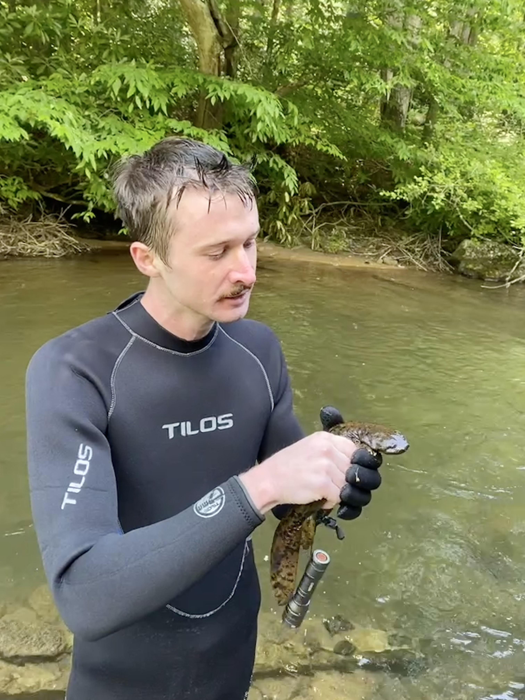
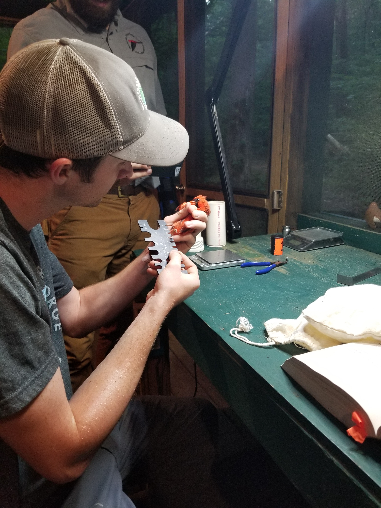
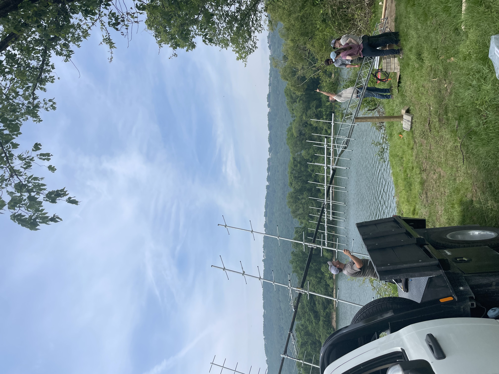

Work and Volunteer Experience
Work and Volunteer experience
Land Management Logistics 2021
 In the summer of 2021, I joined Land Management Logistics as a seasonal biology field technician working for a stream restoration and conservation project under Jeronimo Silva. We were documenting the species occurrence of the Eastern Hellbender Salamander, Tennessee's largest salamander that has experienced severe declines due to habitat degradation, siltation, aquatic contaminants, and infectious diseases. We conducted snorkle surveys, pebble counts, macroinvertebrate surveys, and vegetation surveys to help develop management and conservation plans for this threatened species across eastern TN and southern VA. Below you can see Dr. Michael Freake of Lee University administering a pit tag on a Hellbender we caught at Roan Mountain State Park, TN and a juvenile hellbender getting ready for measurements! Click the button below if you'd like to visit the website for Land Mangement Logistics.
Tennessee River Gorge Trust 2022
 In the summer of 2022, I interned with the Tennessee River Gorge Trust in Chattanooga, TN. During their summer bird banding days, I gained experience extracting birds out of mist nets, banding birds, and scribing. We spent a day with TDEC along Highway 41 conducting vegetation monitoring surveys for the endangered Large Flowered Skullcap. The trust was also finishing up a Kingfisher project where they were studying the yearly movement patterns of Kingfishers using gps tags, and we assisted with acoustic callback surveys along the banks of the TN river. Other duties included welding and campsite/trail maintenance. Below you can see a black and white warbler caught in the net and a few photos of us building a box to house acetylene torches for welding projects. The following summer of 2023, I was invited back to lead two new interns in the daily research and maintenance projects of the trust. While I was there, we got to install and set up Chattanooga's second Motus station along the Tennessee River for an upcoming nation wide Wood Thrush project. While


Tennessee River Gorge Trust 2023
 The following summer of 2023, I was invited back to lead two new interns in the daily research and maintenance projects of the trust. While I was there, we got to install and set up Chattanooga's second Motus station along the Tennessee River for an upcoming nation wide Wood Thrush project. 3-D printing Wood Thrush decoys and painting them was also a part of their project. Along with bird banding duties, we also conducted preliminary environmental vegetation surveys for a Cumberland Plateau Mountain Bog with the South Eastern Grasslands Initiative. Other days were spent taking out crews from the Chattanooga Zoo or Chattanooga Outdoors and educating them on wildlife conservation. Throughout the summer we also gained experience building wooden camping tables, welding a box for our motus station battery, and driving pontoon and jon boats. Below are some photos of a banded juvenile bluebird, a wood thrush decoy, and the intern crew admiring the finished product of a Motus station.